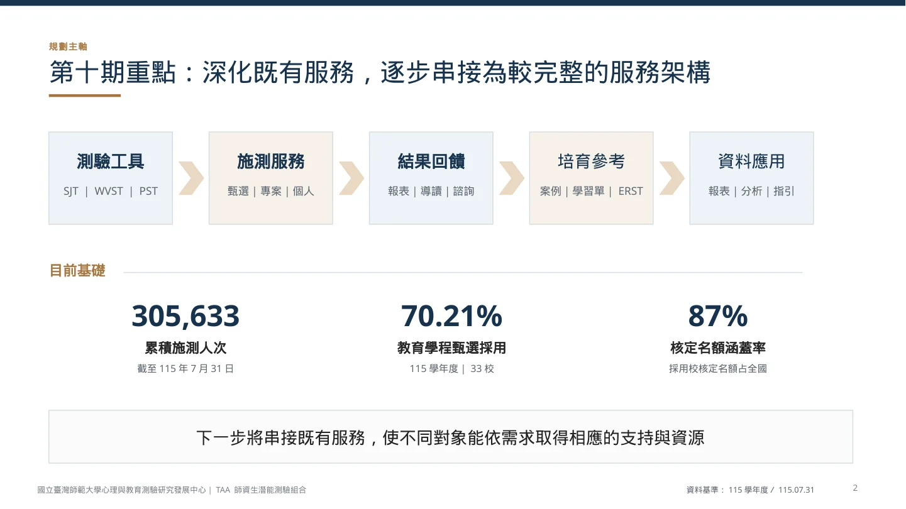
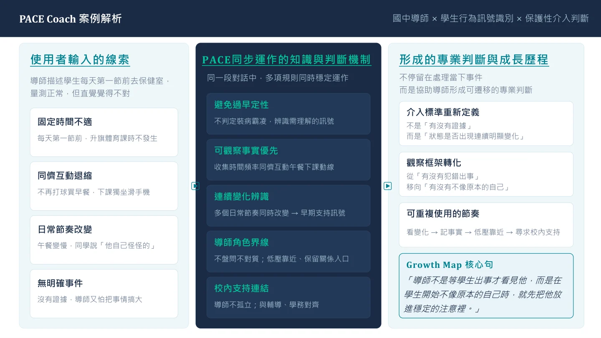

教育服務 · 人才培育 · 知識系統理解現場，
理解現場，
把專業做成
能被使用的服務。
我是葉瑋琳。我的工作橫跨教育現場、服務營運與全國性師培計畫，將複雜需求轉成課程、工具、流程與數位支持。
關注教育科技、學習產品與專案合作。
EXPERIENCE IN CONTEXT
教育現場到全國性服務，持續累積的實作
49所
師資培育大學服務網絡
TAA 合作與服務範圍70.21%
教育學程甄選採用率
115 學年度 · 33 校305,633
累積施測人次
截至 2026.07.31TAA 計畫整體成果。49 校服務網絡見七月成果報告；最新施測、採用及 87% 名額涵蓋率見九月規劃簡報。查看最新統計 ↗ · 完整來源 ↗
SELECTED WORK / 01—04
從需求到實際使用
四件作品，呈現我如何規劃、設計、協作與檢驗。


THE PERSON BEHIND THE WORK我會把問題追到
我會把問題追到
可以動手修改的地方。
一段回應看起來完整，仍可能漏掉資訊與角色差異。從課程設計到 AI 情境測試，我習慣把這些落差說清楚，再做成可檢查的修改。
讀我的故事 ↗LET’S WORK TOGETHER
從你的教育或學習需求開始
我期待參與教育科技、人才培育與學習產品的合作，承接需求整理、內容與流程設計、專家協作，以及導入與驗證。